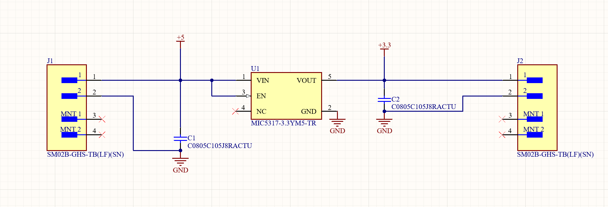

Schematic
Circuit Design
The board is built around a Microchip MIC5317-3.3 low-dropout (LDO) regulator. 5 V comes in on a 2-pin JST GH connector (J1), and the regulated 3.3 V goes out on a matching connector (J2). The regulator's enable pin is tied to the input, so it turns on whenever power is applied.
A 1 µF ceramic capacitor on the input (C1) and another on the output (C2) keep the regulator stable and filter noise on both rails.
- Input
- +5 V
- Output
- +3.3 V regulated
- Regulator
- MIC5317-3.3 LDO
- Capacitors
- 2 × 1 µF, 0805
- Connectors
- JST GH, 2-pin
